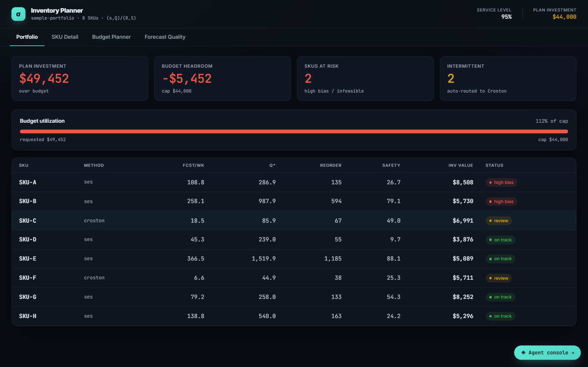
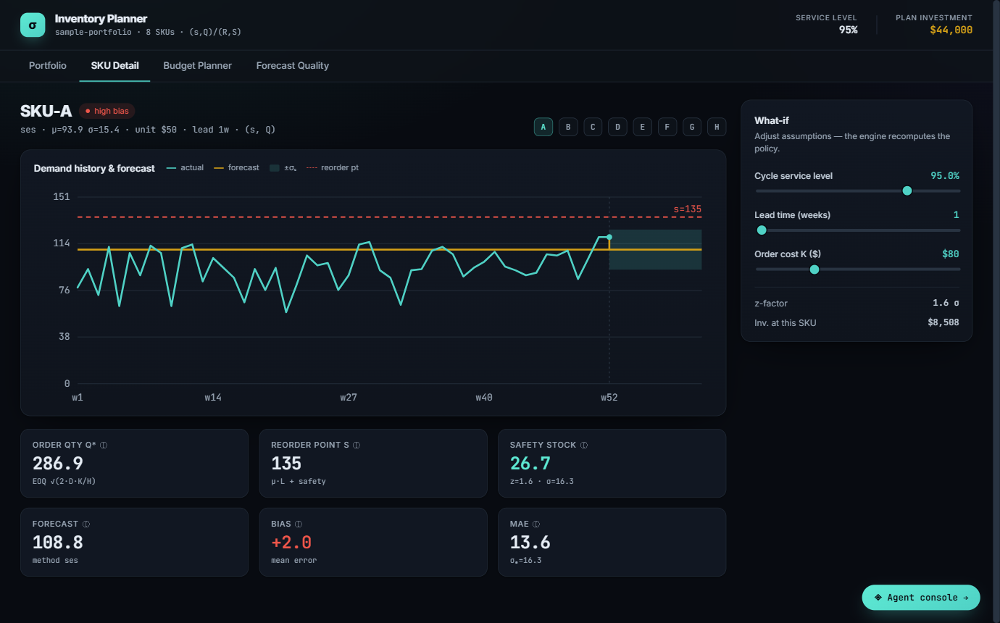

Inventory & Supply Chain Optimization
I turn demand data into inventory decisions you can defend.
Freelance specialist in demand forecasting, safety stock, EOQ, and multi-echelon network design — grounded in the field's established models, and backed by Kern, an AI agent I built to run those models end to end.

About
Hands-on with the models, not just the spreadsheets.
Marcos Stipicich is an inventory and supply chain optimization specialist with thirteen years of experience in inventory, demand planning and distribution centre operations across Chile, Argentina and Australia.
Rather than eyeballing reorder points in a spreadsheet, I build and run the actual models — EOQ, safety stock, multi-echelon guaranteed-service optimization, demand classification — grounded in the field's established textbooks (Vandeput, Silver-Pyke-Peterson, and others). That rigor is packaged into Kern, an AI agent I built that classifies a plain-language brief, runs the right model, validates the result, and delivers a finished Excel/report — see the case studies below.
BBA in Logistics from Duoc UC, Chile, and a Graduate Certificate in Supply Chain and Logistics Management from RMIT Melbourne.
Skills
What I work with
Case Studies
Five ways the models pay off
Every number below is a real, reproducible output — a worked textbook example or a run against public benchmark data — not a client testimonial.

Forecasting
Demand Forecasting & Segmentation at Scale
Classifying and forecasting 34,498 SKUs across 75 public retail datasets, end to end.
Read the case study →
Safety Stock & EOQ
Right-Sizing Safety Stock, Reorder Points & Order Quantities
Textbook-grounded EOQ and safety-stock models, worked end to end from raw demand statistics.
Read the case study →
Network Design
Multi-Echelon Network Optimization
Guaranteed-service modeling across a 3-stage supply chain to place safety stock where it's cheapest.
Read the case study →
AI Agent
Building an AI Agent for Supply-Chain Decisions
Why I didn't stop at spreadsheets: a QA-gated pipeline that runs 50 supply-chain tools end to end, with every number computed rather than generated.
Read the case study →
Audit Evidence · In Development
Turning Inventory Analytics into Audit-Defensible Evidence
Researching PCAOB/AICPA standards first, then building statistical sampling and lineage that a reviewer can re-derive, not just trust.
Read the case study →Certifications